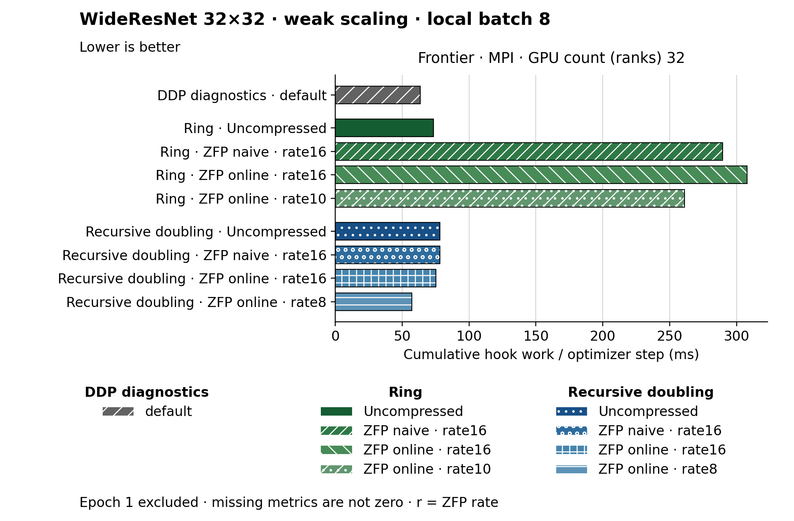

The figure uses hbar. Families and methods are identified by text and patterns in addition to color. The metric is Cumulative hook work / optimizer step (ms). Frontier · MPI, GPU count (ranks) 32: Recursive doubling · ZFP online · rate8 has the lowest plotted value, 57.292. Epoch 1 is excluded. Values are medians; when repeated runs are available the selected repeat policy is median. These are not confidence intervals across repeated jobs. Missing or unrecorded metrics are omitted, not set to zero. Hook work is cumulative instrumented work; it can overlap and is not an additive wall-time partition.
| Panel | GPU count (ranks) | Method | Value | Runs |
|---|---|---|---|---|
| Frontier · MPI | 32 | ring | 73.40010256410257 | 1 |
| Frontier · MPI | 32 | ring_zfp_naive:16 | 289.5931076923077 | 1 |
| Frontier · MPI | 32 | ring_zfp_online_coll:16 | 307.783 | 1 |
| Frontier · MPI | 32 | ring_zfp_online_coll:10 | 261.2596717948718 | 1 |
| Frontier · MPI | 32 | recursive_doubling | 78.24241538461538 | 1 |
| Frontier · MPI | 32 | recursive_doubling_zfp_naive:16 | 78.26450256410256 | 1 |
| Frontier · MPI | 32 | recursive_doubling_zfp_online_coll:16 | 75.1037282051282 | 1 |
| Frontier · MPI | 32 | recursive_doubling_zfp_online_coll:8 | 57.29214871794871 | 1 |
| Frontier · MPI | 32 | default | 63.4626 | 1 |